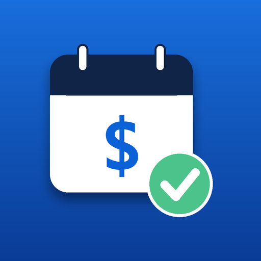
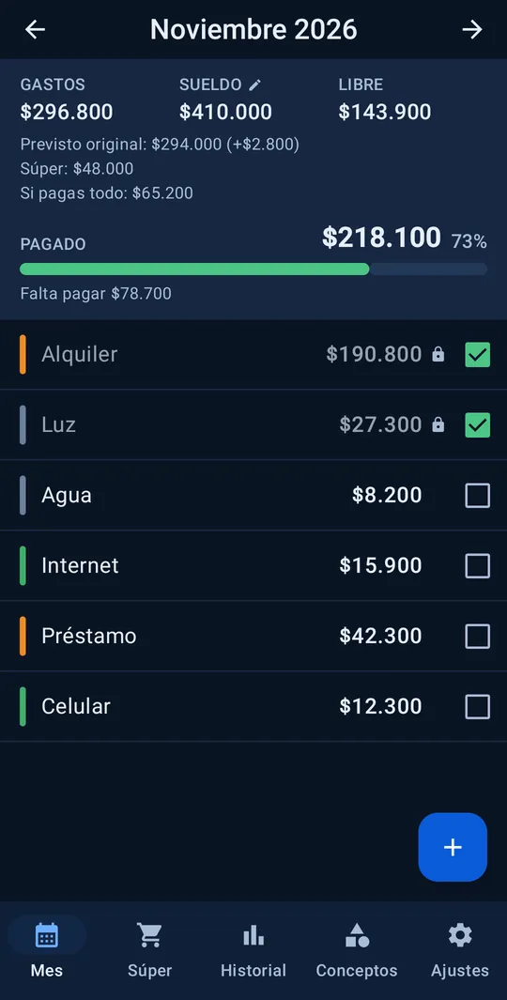
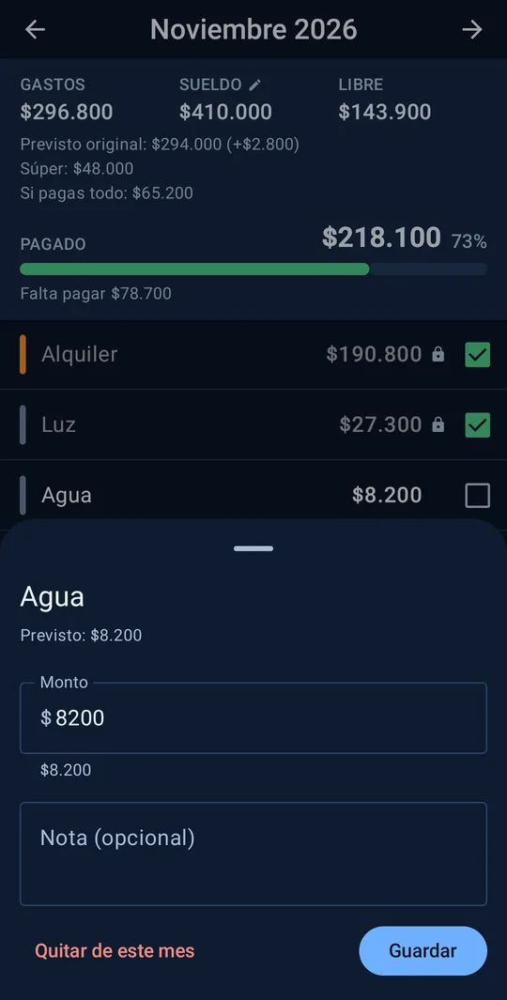
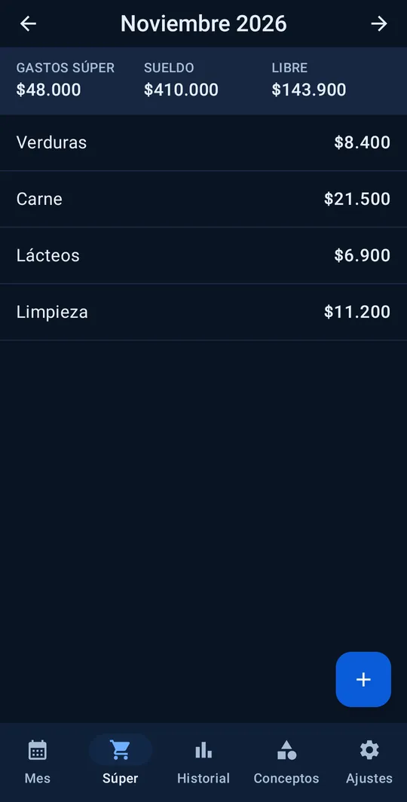
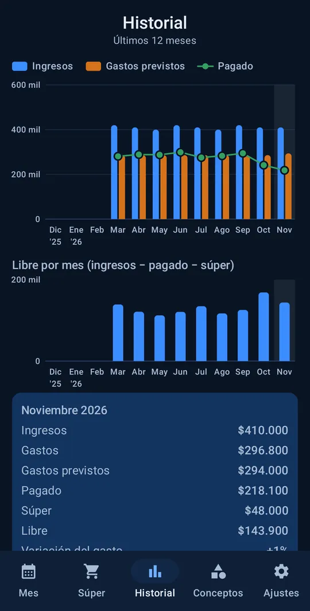

Cuatro números claros
GASTOS, SUELDO, LIBRE y PAGADO. LIBRE es lo que te queda en mano ahora, y debajo ves «Si pagas todo».

Gastos del mes · App para Android
Anota tus gastos del mes y mira cuánto te queda. Sin conexión ni cuentas.
Disponible en Google Play (se abre en una pestaña nueva)Así se ve
Desliza para ver la app. Los datos de las capturas son de ejemplo.




Funciones principales
Anotas lo que debes pagar, lo marcas cuando lo pagas y ves al instante cuánto dinero te queda.
GASTOS, SUELDO, LIBRE y PAGADO. LIBRE es lo que te queda en mano ahora, y debajo ves «Si pagas todo».
«Copiar mes anterior» trae tus conceptos y montos. Corriges cada uno y la app te muestra el «Previsto original» para comparar.
Al marcar un gasto como pagado queda bloqueado. Si necesitas corregirlo, mantén pulsado y elige «Reabrir pago».
Crea tus conceptos (luz, agua, alquiler, internet…), agrúpalos y ponles un color. También puedes agregar un gasto puntual solo para ese mes.
Anota cada compra con su monto y mira el total del mes, con tu sueldo y el mismo LIBRE, ya con el súper descontado.
Gráficos de ingresos, gastos y lo pagado mes a mes, con lo que te quedó libre. Ideal para ver en qué meses gastas más.
Comparte una plantilla (.gdm) con otra persona, exporta un respaldo completo para cuando cambies de celular, o exporta el mes a CSV.
Tema claro, oscuro o el del sistema, y la moneda que prefieras ($, US$, €, S/, R$ u otra).
Tu privacidad, primero
Funciona sin conexión: la app no pide permiso de Internet.
Sin cuentas, sin registro, sin anuncios y sin análisis de uso.
Tus datos se guardan solo en tu teléfono. Nadie más los recibe.
Lee los detalles en la política de privacidad.
Preguntas frecuentes
Sí. Funciona 100 % sin conexión: la app no pide permiso de Internet.
Es gratis, sin anuncios ni compras dentro de la app.
Es lo que te queda en mano ahora: tu sueldo menos lo que ya pagaste y lo que llevas gastado en el súper. Baja cuando marcas un gasto como pagado o anotas una compra del súper, y vuelve a subir si reabres un pago.
Con «Copiar mes anterior» traes tus conceptos y montos del mes pasado como punto de partida. Luego corriges cada monto con lo que realmente gastaste.
Sí. Al marcar un gasto como pagado queda bloqueado para que no cambie por error. Para corregirlo, mantén pulsado y elige «Reabrir pago».
Puedes exportar un respaldo completo y restaurarlo cuando cambies de celular. También puedes exportar el mes a CSV para abrirlo en tu planilla.
No, salvo que tú lo elijas. Quien recibe la plantilla (un archivo .gdm) obtiene su propia copia, sin mezclar nada con sus datos.
Requisitos y datos técnicos
Soporte y contacto
Escríbeme y te respondo.
Sin perder tiempo. Sin conexión, sin cuentas y sin anuncios.
Descargar en Google Play (se abre en una pestaña nueva)